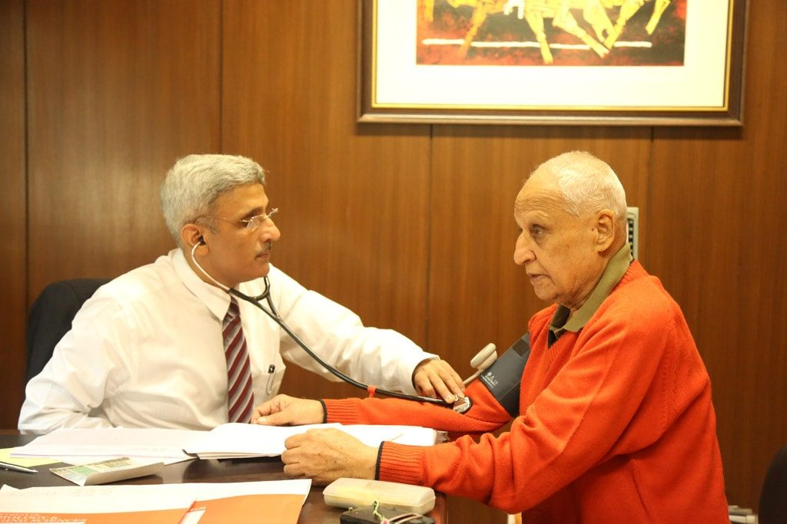
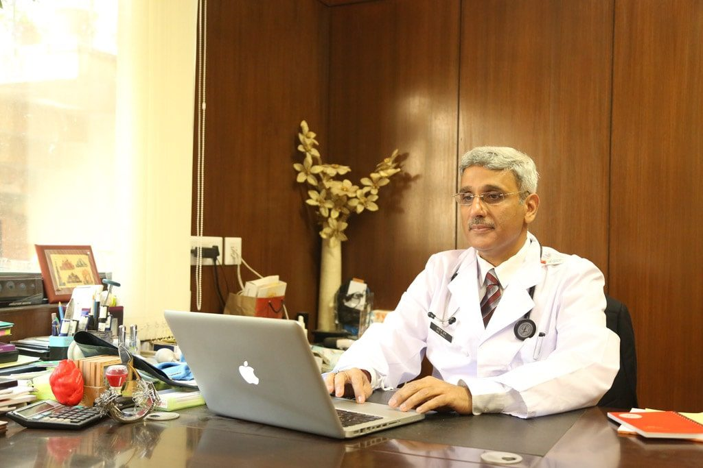
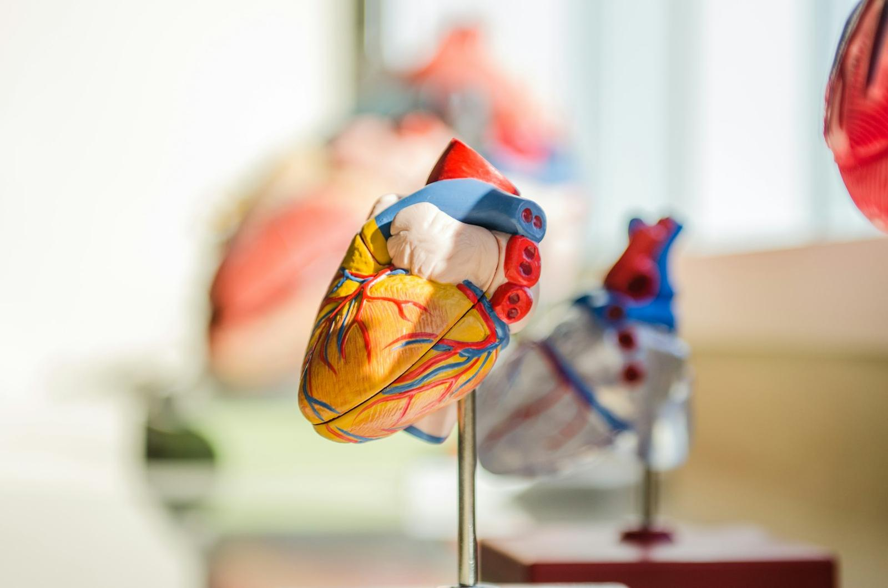

From a balloon to AI: the extraordinary evolution of interventional cardiology
Dr (Col) Anil Dhall · YouTube
Interventional cardiologist · Gurugram & online
I'm Dr (Col) Anil Dhall. I have looked after hearts for over forty years — twenty-five of them as an Army doctor. Today I see patients at my own clinic in Gurugram, and families anywhere by video.



Time to talkUnhurried consultations, with room for your questions and your family's.
A clear second opinionPlain advice before angioplasty, bypass or a pacemaker.
Care from anywhereVideo consultations for families in other cities and abroad.
In your languageEnglish or Hindi, with every report explained simply.
Fellow of seven cardiology colleges and societies in India, the UK, Europe and the USA
In person in Gurugram, or by video from wherever you are. Every consultation ends with a clear plan you can take home.
A full cardiac consultation at The Heart Clinic, Gurugram — history, examination, ECG review and a clear written plan. Bring all your reports and medicines.
For patients outside Gurugram, families abroad, or when travel is hard. Reports are shared on WhatsApp or email beforehand.
Been advised angioplasty, bypass, a pacemaker or a valve procedure? Dr Dhall reviews your angiogram CD and reports and explains the options, so you can decide with confidence.
For people without symptoms who want to know where they stand — family history, diabetes, high BP or cholesterol. Includes a risk score, a test plan and personal targets.
Follow-ups and heart tests (Holter, ABPM, event recorder) are on the consultations page. Pay at the clinic by cash, card or UPI.

Every consultation ends with a clear written plan.

See a heart specialist if you notice any of these — or if you have diabetes, high blood pressure or a family history of early heart disease, even without symptoms.
Discomfort on walking, climbing or stress — and what it means.
Fast treatment, then protecting the heart for the years ahead.
Getting the numbers right, with fewer tablets where possible.
Targets that match your real risk, not just the lab range.
Finding the rhythm behind the symptom.
Modern medicines and devices that change outcomes.
Heart protection for people with diabetes.
Peripheral artery disease — a warning sign worth checking.
High blood pressure rarely causes symptoms, yet it is the most common reason hearts and kidneys wear out early. Type in a reading from your home monitor to see where it falls.
“Your professional competence is par excellence. More than anything else, what touched me most was your humane approach and cheerfulness.”Brig S S Grewal, in a letter to then-Major Anil Dhall, 22 August 1995

Dr Dhall started the first cardiac catheterisation laboratory at the Army Hospital (Research & Referral) in Delhi Cantonment, then went on to lead cardiology departments at some of Delhi NCR's best-known hospitals.
MD (gold medal, Bombay University) and DM Cardiology from GB Pant Hospital, Delhi.
Awarded by the President of India for distinguished service to the Armed Forces.
Max, Artemis, Delhi Heart & Lung Institute, Sarvodaya, Venkateshwar and Janakpuri Super Speciality Hospital.
Personal, continuous care — the way he always wanted to practise.
Dr Dhall has taught, proctored and demonstrated interventional techniques at meetings around the world, including TCT, EuroPCR, the ESC and ACC congresses.
Chronic total occlusions, left main, bifurcations, rotational atherectomy, imaging-guided stenting.
Set up 24×7 primary angioplasty programmes at major hospitals.
Carotid stenting, leg and kidney arteries, stent-graft repair of the aorta.
Pacemakers, ICDs and cardiac resynchronisation therapy (CRT).
Long before online reviews, patients wrote letters. These are a few Dr Dhall has kept.
Dr Dhall explains cholesterol, blood pressure, rhythm problems and new research in plain English and Hindi.
Dr (Col) Anil Dhall · YouTube
Dr (Col) Anil Dhall · YouTube
Dr (Col) Anil Dhall · YouTube
Visit the heart library — plain-language guides to conditions, tests and treatments.
Landmark: near the Shani Mandir and City Club, DLF Phase III.
| Monday to Friday | 4:00 – 8:00 pm |
|---|---|
| Saturday | 4:00 – 8:00 pm |
| Sunday | Closed |
Loads Google Maps
No. You can book directly. If another doctor has referred you, bring their note and all your reports.
All previous reports (ECG, echo, TMT, blood tests, discharge summaries), any angiography CD, and your current medicines or their strips. A list of questions helps too.
The clinic confirms the fee when you book. You can pay at the clinic by cash, card or UPI; for video consultations, payment details are shared when your time is confirmed.
Yes — this is one of the most common reasons families come. Dr Dhall reviews the angiogram and reports and explains, in plain language, which option suits you and why.
Yes. Many families in other cities or countries consult by video for their parents. Share reports on WhatsApp or email before the call.
Procedures are done at accredited hospitals with a 24×7 cath lab in Delhi NCR. Dr Dhall will discuss the hospital, the plan and the expected costs with you at your consultation.
Book a clinic visit in Gurugram or a video consultation from anywhere. Bring your reports — Dr Dhall will go through them with you, in English or Hindi.